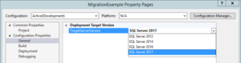

In the previous post, I wrote about migrating SSISDB database. When we migrate the database the packages still have the version of the source SSIS catalog. When you start the execution of the migrated package, you get the information like “The package was migrated from version 6 to version 8. It must be saved to retain migration changes.”
This information is written to the log no matter which logging level we choose (also with None).
The question is: will it blend should we upgrade the packages (or better – the projects)? And if the answer is ‘yes’ – why should we do it and what are the options?
Should we upgrade the packages?
Yes. Read on.
Why should we do it?
Looking at the times of the upgrade (it takes milliseconds) we can live with automatic version migrations during thousands of executions. So – is there any gain if we retain it?
Let’s take a closer look at the SSIS Toolbox. We are migrating to SSIS 2017 from the lower version, let’s say the source is SSIS 2012. Open SQL Server Data Tools (for Visual Studio 2015 or 2017, does not matter for now) and load your project. I will use SSDT for VS 2017 with sample project created for SSIS 2012. See the SSIS Toolbox for the project in version SSIS 2012? There is a Script Task following an FTP Task.
I will upgrade the SSIS project to the latest version (and write more about it in few lines) and take a look at the SSIS Toolbox now.
Now we can see additional tasks for Hadoop. Upgrading the project does at least two things that are interesting to us: it uses the latest versions of the tasks and components, but also introduces the new elements to use.
OK, what are the options?
Basically, you have two:
- Use “Upgrade All Packages” option when you right-click the “SSIS Packages” node in the project – it starts the SSIS Package Upgrade Wizard

- Set “Target Server Version” to SQL Server 2017 when you use “Properties > Configuration properties > General” page of the project configuration 

What is the difference and what are the potential problems? You can read more in the blog post by Hans Michiels, but from my perspective, it sums up to those situations:
- if you set target server version, you also upgrade the .dtproj file and the connection managers (if needed)
- if you use target server version you don’t see the upgrade errors – you know them when you try to open the package
- if you use target server version, you don’t have the automatic backup of the packages (but you are warned before the upgrade)
- you won’t upgrade the package when there is even one error when you use the SSIS Package Upgrade Wizard
Personally, I use the setting the Target Server Version approach as I also want to upgrade the .dtproj file. When you use the wizard, you have to change the project file by hand – if you don’t SSDT will automatically downgrade the packages to the lower version to be in line with the project version.
The problem
Great, we can migrate the packages using SSDT. But what if you have a lot of projects (say – 50) and there is a chance you will have to do the process few times? There is no external tool to migrate the project from the command line (the wizard has no options to run from the cmd - it just opens the application EDIT 29.12.2017: SSISUpgrade.exe has commandline switches, but only for automatic setting of the wizard options), so I started a small investigation.
Under the hood, the two processes are a bit different. For now, it looks like using Target Server Version way uses the same mechanism as automatic migration, and the SSIS Package Upgrade Wizard might use methods from the [Application](https://msdn.microsoft.com/en-us/library/microsoft.sqlserver.dts.runtime.application.aspx) class from the [Microsoft.SqlServer.Dts.Runtime](https://msdn.microsoft.com/en-us/library/microsoft.sqlserver.dts.runtime.aspx) namespace. I’m not 100% sure about it, but after some time with observations of those two processes, I think this is it. I don’t use sophisticated tools, don’t know yet how to use WinDbg to observe the Windows processes, I just watched the assemblies loaded using the Process Explorer and read methods of the files in the Visual Studio (added references to assemblies or executables and analysed them with Object Browser).
If you observe the libraries loaded to SSDT during the setting the target version, you will see it loads Microsoft.SqlServer.PackageFormatUpdate.dll (of course it uses a lot more, but this one has a significant name) that relies on Microsoft.SqlServer.DTSRuntimeWrap. The wizard does not use this library. It uses (besides other .dll files) Microsoft.SqlServer.ManagedDTS and Microsoft.SqlServer.DTSRuntimeWrap.
After reading the documentation of the Application class, I think there is quite an easy way to upgrade the packages automatically with the Application.Upgrade() or Application.SaveAndUpdateVersionToXml() methods. But this is the subject of the second part of the SSIS migration posts.


{kind=link}
{kind=link}
{kind=link}
{kind=link}